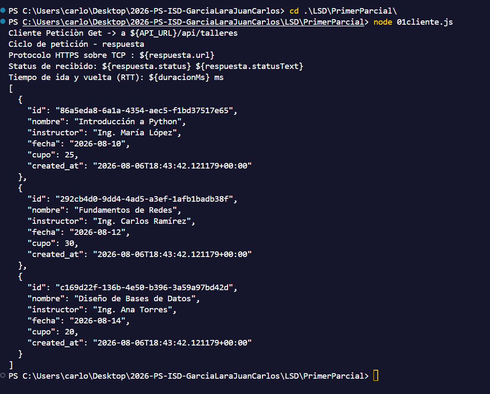

Se está ejecutando un cliente Node.js para validar la arquitectura cliente-servidor mediante una petición HTTP GET dirigida a la ruta /api/talleres del backend alojado en Render.
1. Transacción de red: El script utiliza la API nativa fetch para establecer comunicación sobre HTTPS/TCP con el servidor remoto y procesar el flujo de datos.
2. Carga útil: El servidor responde con un arreglo JSON estructurado que contiene tres registros de talleres ("Introducción a Python", "Fundamentos de Redes" y "Diseño de Bases de Datos"), exponiendo atributos relacionales como id, instructor, fecha, cupo y created_at.
3. Observación de la consola: La consola muestra las cadenas de texto de manera literal (ej. ${API_URL}) en lugar de interpolar las variables, debido a que las funciones console.log del código utilizan comillas dobles (" ") en lugar de comillas invertidas (backticks).
Imagen de la consola:
